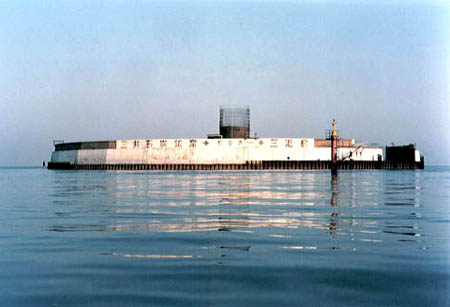

三池島通気坑
福岡県大牟田市
大牟田市の沖合い約6キロの地点に浮かぶ三池炭鉱の第2人工島・三池島(通気専用)。
この島で1994年から、ベニアジサシという大変貴重な鳥が毎年繁殖していることが、荒尾市在住の「日本野鳥の会」 会員などの調査で明らかになっている。そこで、野鳥の会では、準絶滅危惧に分類されているこれら野鳥を保護してい くため、三池島を「アジサシの島」として保全していこうと提案している。

（1997年3月 栗林氏撮影）
BACK